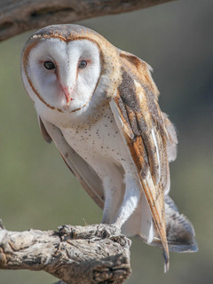
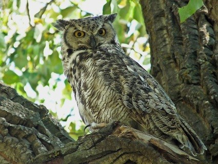
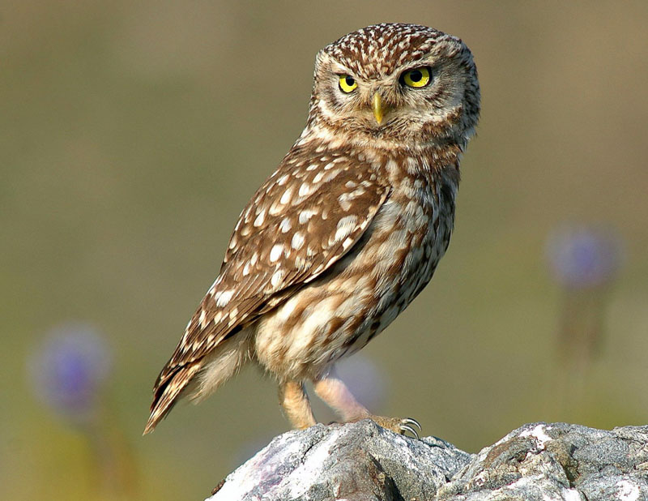
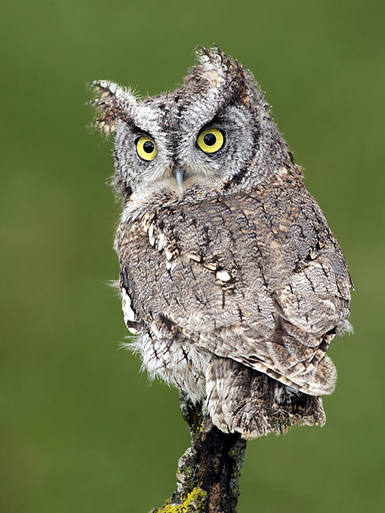
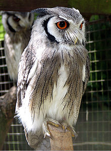

 The barn owl (Tyto alba) is the most widely distributed species of owl and one of the most widespread of all birds. It is also referred to as the common barn owl, to distinguish it from other species in its family, Tytonidae, which forms one of the two main lineages of living owls, the other being the typical owls (Strigidae). The barn owl is found almost everywhere in the world except polar and desert regions, Asia north of the Himalayas, most of Indonesia, and some Pacific islands.
 The American (North and South America) horned owls and the Old World eagle-owls make up the genus Bubo, at least as traditionally described. The genus name Bubo is Latin for the Eurasian eagle-owl. This genus, depending on definition, contains about one or two dozen species of typical owls (family Strigidae) and is found in many parts of the world. Some of the largest living Strigiformes are in Bubo. Traditionally, only owls with ear-tufts were included in this genus, but that is no longer the case.
 The true owls or typical owls (family Strigidae) are one of the two generally accepted families of owls, the other being the barn owls (Tytonidae). The Sibley-Ahlquist taxonomy unites the Caprimulgiformes with the owl order; here, the typical owls are a subfamily Striginae. This is unsupported by more recent research (see Cypselomorphae for details), but the relationships of the owls in general are still unresolved. This large family comprises around 189 living species in 25 genera. The typical owls have a cosmopolitan distribution and are found on every continent except Antarctica.
 Screech owls or screech-owls are typical owls (Strigidae) belonging to the genus Megascops. Twenty-one living species are known at present, but new ones are frequently recognized and unknown ones are still being discovered on a regular basis, especially in the Andes. For most of the 20th century, this genus was merged with the Old World scops owls in Otus, but nowadays it is again considered separate based on a range of behavioral, biogeographical, morphological and DNA sequence data. Screech owls are restricted to the Americas. Some species formerly placed with them are nowadays considered more distinct (see below for details). The common name "screech owl" is sometimes used for the not closely related barn owl as well.
 The northern white-faced owl (Ptilopsis leucotis) is a species of owl in the family Strigidae. The southern white-faced owl (P. granti) was formerly included in this species and the two were known as the white-faced scops-owl.It is found in a band across Africa between the Sahara and the Equator. It occurs in Benin, Burkina Faso, Cameroon, Central African Republic, Chad, Republic of the Congo, Ivory Coast, Djibouti, Eritrea, Ethiopia, Gambia, Ghana, Guinea, Guinea-Bissau, Kenya, Liberia, Mali, Mauritania, Niger, Nigeria, Senegal, Sierra Leone, Somalia, Sudan, Togo and Uganda.